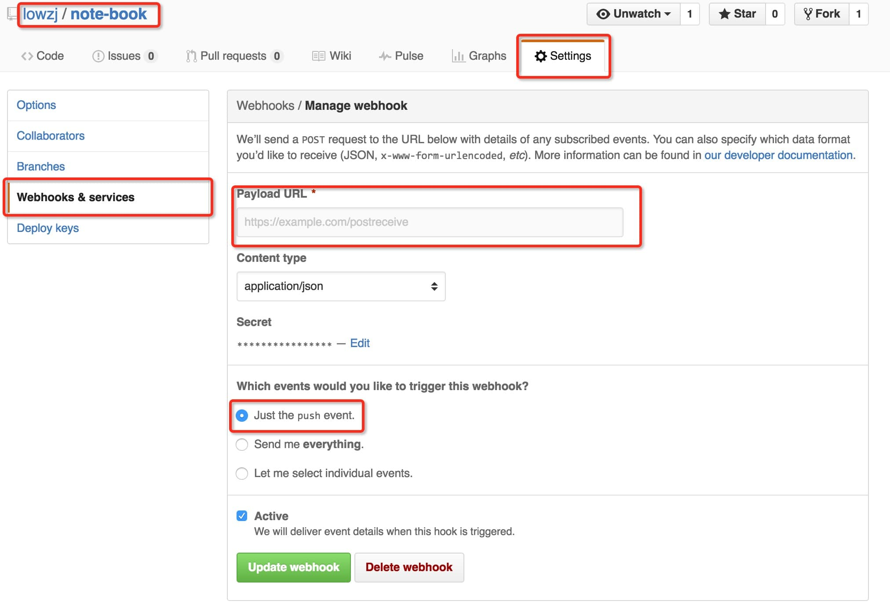

@lowzj
Introduction
本站是@lowzj的个人学习笔记，使用下面几个组件搭建：
markdown。所有内容均使用markdown编写。git。版本控制。- gitbook。将markdown生成网页文件。
nginx。github。代码托管。github webhooks。发送repo相关的事件通知。python webpy。简单的web server，用于接收处理github webhooks的事件通知。
下面简单介绍下如何自建一个gitbook网站。
如何生成一个GitBook
安装
gitbook。参考: CentOS上安装gitbookyum -y install nodejs npm git npm install -g gitbook-clidemo
$ mkdir demo $ cd demo $ gitbook init $ gitbook serve . Starting server ... Serving book on http://localhost:4000
利用github部署及自动更新
- 在github上新建一个git repo，托管所有的markdown文件。
部署到服务器
- 首先得有一个能让外网机器访问的服务器
然后在该服务器上将git repo clone下来，执行
gitbook serve .，就可以生成一个gitbook网站啦mkdir -p ~/gitbook/ cd ~/gitbook git clone git@github.com:lowzj/note-book.git cd note-book nohub gitbook serve . > /tmp/note-book.log 2>&1 &- 当然可以使用nginx等反向代理，访问
gitbook build生成的_book静态文件，这里就不多说了
自动更新。当commit push到github后，就更新服务器上的本地repo，如果使用
gitbook build，就再重新build一次。这里要利用github提供的Webhooks功能。到github repo的
Settings页面，选择Webhooks & services，如图所示。
Webhooks allow external services to be notified when certain events happen within your repository. When the specified events happen, we’ll send a POST request to each of the URLs you provide. Learn more in our Webhooks Guide.
其中最重要的一项配置就是
Payload URL，对应着自己服务器上web server提供的POST接口。这里使用webpy给出一个简单的例子main.py。#!/usr/bin/env python # -*- coding:utf-8 -*- import web import commands urls = ( '/', 'Index' ) class Index: def GET(self): return "Hello World" def POST(self): note_book_home="/home/zj/github/note-book" out = commands.getoutput("cd " + note_book_home + " && git pull") return out app = web.application(urls, globals()) if __name__ == "__main__": app.run()运行
python main.py 9999，端口是9999，在Payload URL中填入http://your_ip:9999。- 好了，以上就基本完成了自建
gitbook的部署以及自动更新。
Expect the upexpected!